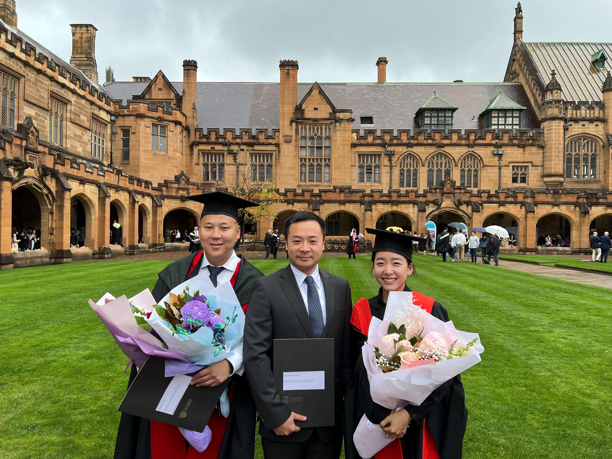
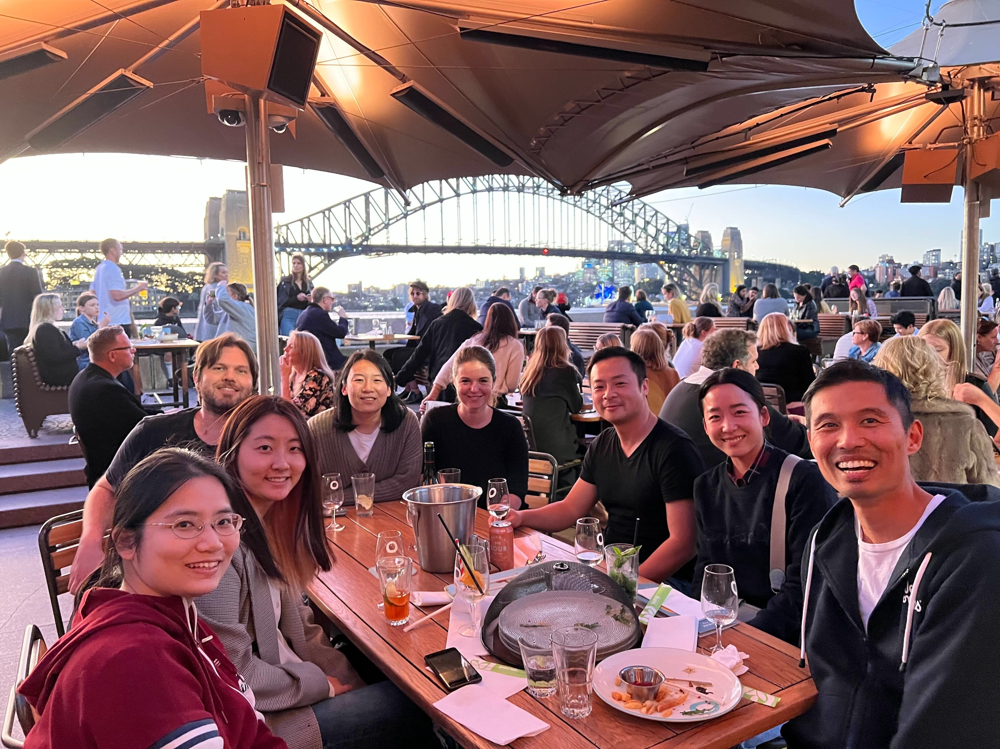
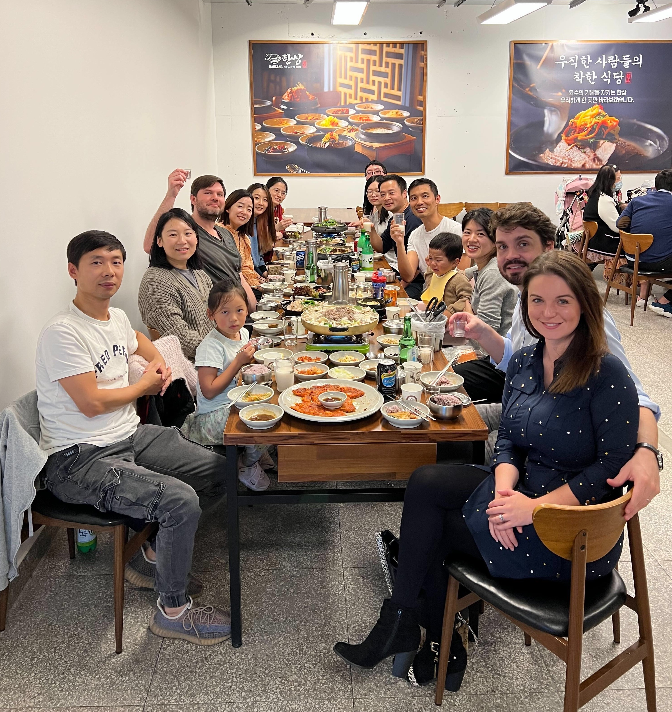
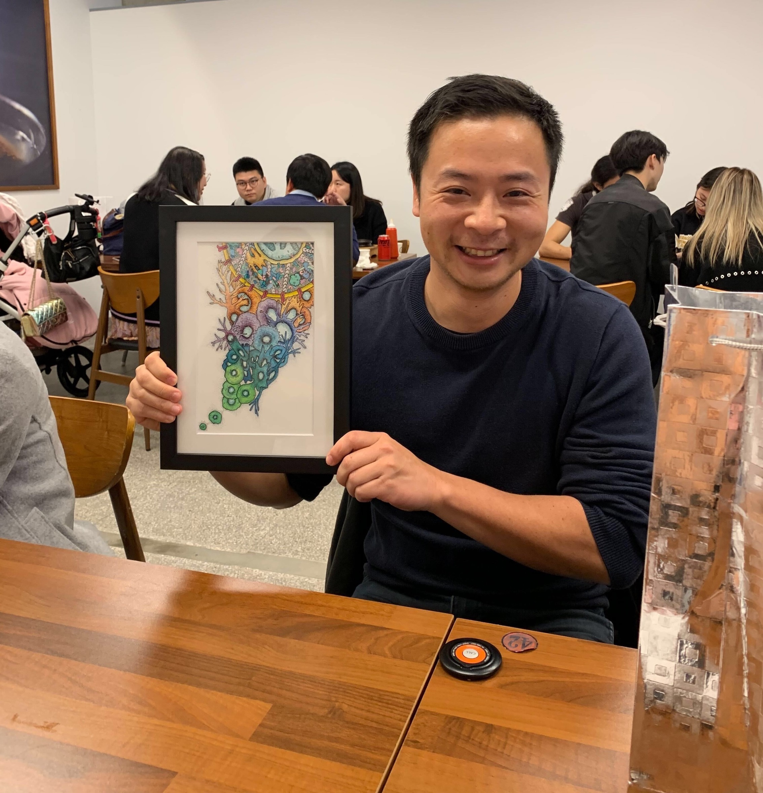

Deciphering trans-regulatory networks for controlling cell identity and cell-fate decisions
Hani and Taiyun's PhD Graduation!

Computational Systems Biology Team at the Jean for Gene fundraising.

Korean BBQ at Strathfield.


Just another day at Carissa's favourite.
The first official lab photo!
The first retreat at Hawks Nest, 2021